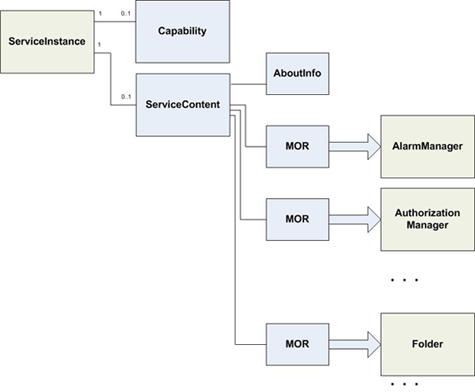
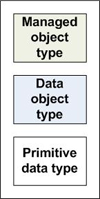

The VMware vSphere management object model is a complex system of data structures designed to provision, manage, monitor, and control the life-cycle of all components that can possibly comprise virtual infrastructure. The VMware vSphere management architecture is patterned after Java’s JMX (Java Management Extensions) infrastructure in which objects are used to instrument other objects, on a remote server. The data structures defined for the object model include both managed object types, as described on this page, and data object types.
A “managed object type” is a core data structure of the server-side object model. Instances of various managed object types are referred to generically as “managed objects,” of which there are two broad categories:
Managed objects can contain both properties and operations. An “operation” is Web-services terminology for what might be called a “method” in other programming languages, such as Java. In fact, the word “method” is used in the API Reference rather than operation, but you may see the two words used, interchangeably.
Regardless of these subtle language differences, working with the server from a client involves a few common steps, starting with connecting to the server, authenticating user-account credentials, and obtaining a session. (See the Programming Guide for details).
After connecting to the server system, the client application must then obtain a reference to the ServiceInstance managed object. This figure shows the ServiceInstance and some of its associated data objects. (In this figure, the property names are not shown: only the data type of the associated property).
|  |
LEGEND  |
The “MOR” in the figure above is an abbreviation for ManagedObjectReference, a data object type that provides a reference to server-side objects for use by client applications. See the Programming Guide for more information.
All managed object types are listed in the frame at the left of this page. Click a name to display the reference documentation for the managed object.
To quickly find any entry, start typing its name in the Quick Index.
Back to Home